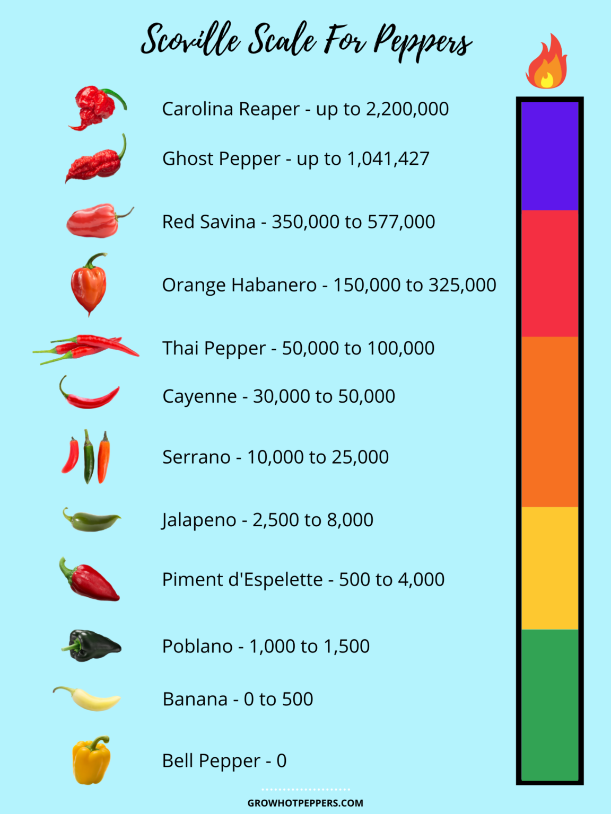

Scorville Scale

Scoville Scale
A higher score means the pepper is spicier.
In 1912 American pharmacist Wilbur Scoville devised a test to determine the heat level of
different chilies. Originally called the Scoville Organoleptic Test, it was a scientific method
of testing the pungency (heat) of a pepper. At least it was as scientific as it could get considering
that it was still based on how humans detect spiciness.
Alcohol is used to extract the capsaicinoids from dried peppers. Then sugar water
is used to dilute the capsaicinoids incrementally and given to a panel of testers.
When the testers no longer discern heat the test is done.
Human taste buds. The heat level or Scoville heat unit of the pepper is based on
the amount of dilution it took for the majority of the human testers to no longer
detect the heat. For example, if a pepper has a SHU (Scoville Heat Unit) of 100,
that means the capsaicinoids had to be diluted 100 times for testers not to detect spiciness.
This creates the pepper hotness scale.
As I already explained, there are some shortcomings with the Scoville heat scale,
like human taste buds. Even though testers go through training, not all taste buds taste the same.
In some cases, results can vary up to 50%.
There is a more scientific, no humans required, test called High Performance Liquid Chromatography (HPLC)
that measures in Asta Pungency Units. If you're interested in this other method of testing be
on the lookout for the article.